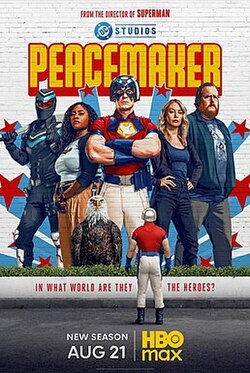
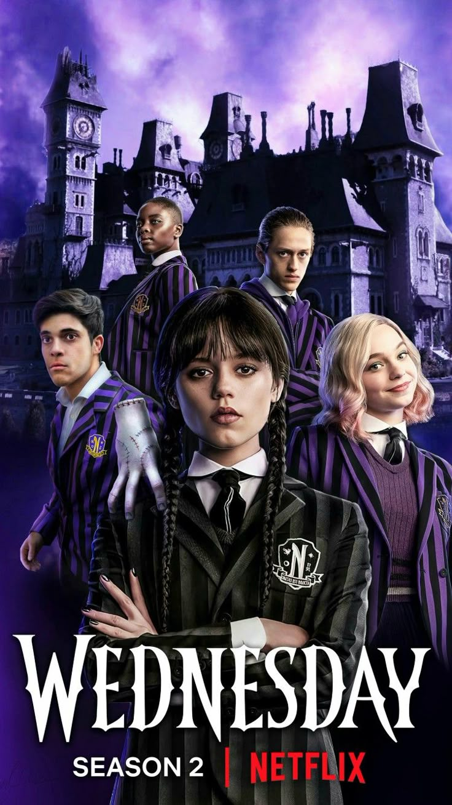
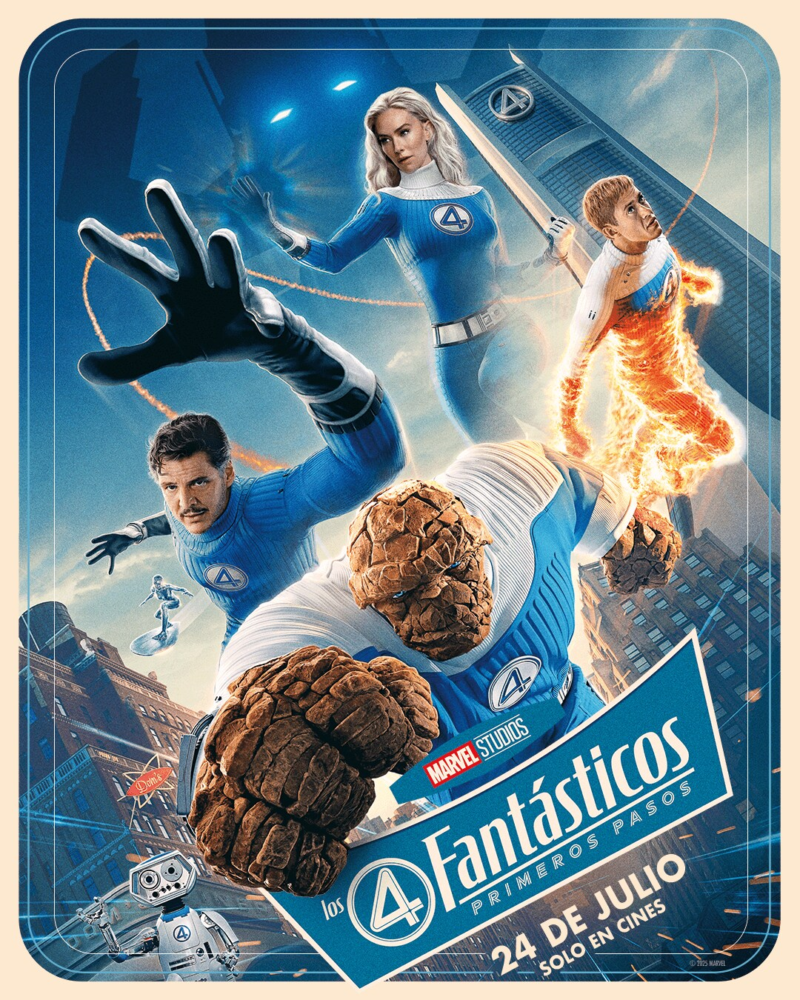

NOVEDADES
Peacemaker

La segunda temporada de Peacemaker se estrena el 21 de agosto de 2025 en HBO Max. La temporada constará de ocho episodios y sigue al antihéroe interpretado por John Cena. Además, se ha confirmado que la temporada 2 de Peacemaker seguirá a Superman en el calendario de lanzamientos de DCU. James Gunn, además de ser el showrunner, también escribirá y dirigirá los ocho episodios de la temporada. La trama de la segunda temporada explorará un mundo alternativo donde Peacemaker encuentra una realidad que satisface sus deseos, lo que lo obligará a confrontar su pasado y tomar las riendas de su futuro. La serie promete ser una continuación de la historia de Peacemaker, explorando su personaje y su lugar en el nuevo DCU. Al igual como se ha mencionado durante todo este tiempo James Gunn confirmo que la serie de Peacemaker, sera la continuacion de su nuevo universo donde veremos como sigue este universo despues de la pelicula ya estrenada de SUPERMAN.
Merlina

Temporada 2
Es una de las series más populares de Netflix en los últimos tiempos, y su esperada segunda temporada que se va a dividir en dos partesla primera parteya está disponible desde este 6 de agosto. con 4 episodios que duran alrededor de 1hr. La segunda parte se estrenara el 3 de Sptiembre del 2025 y seran 4 capitulos mas. En esta temporada, Merlina deberá lidiar con su familia, amigos y antiguos adversarios, lo que la llevará a vivir otro año de caos sombrío y extravagante. Armada con su aguda inteligencia y su encanto sarcástico, la adolescente también se verá envuelta en un nuevo y escalofriante misterio sobrenatural.El primer avance de la serie muestra que esta nueva temporada será aún más escalofriante que la anterior, adentrándose más al terror y convirtiendo a nuestra protagonista en un personaje aún más sombrío. Además de Jenna Ortega como Merlina Addams se ha confirmado el regreso en roles protagónicos de Catherine Zeta-Jones como Morticia Addams, Luis Guzmán como Gomez y Unati Lewis-Nyawo como Ritchie Santiago. También volveremos a ver a Emma Myers como Enid Sinclair y Hunter Doohan como Tyler.
Cuatro Fantasticos

Sigue a Reed Richards, Sue Storm, Johnny Storm y Ben Grimm, un grupo de astronautas
que,
después de una misión en el espacio, obtuvieron poderes especiales y se transformaron en
superhéroes.Su vida toma un giro cuando Silver Surfer visita la tierra para anunciar que
el planeta
está en riesgo al
ser el
próximo
objetivo de Galactus, un dios del espacio con el poder de terminar con la vida como
la
conocen.
La pelicula cuenta con un excelente reparto, Vanessa Kirby es Susan Storm, actriz
de la saga
de
"Mision Imposible" y "Yo antes de ti". Pedro Pascal es Reed Richards, actor de
"The Last of
Us,
"Gladiador 2" y "Juego de Tronos".Joseph Quinn es Johnny Storm, actor de
"Stranger Things" y
"Gladiador 2".Julia Garner es Silver Surfer, actris de "Inventando a Anna" y
"Ozark". Ebon
Moss-Bachrach es Ben Grim (La Mole), actor de El Oso y The Punisher.Ralph
Ineson es
Galactus, actor de "La Bruja" y "Nosferatu"
Fecha de estreno 24 de Julio 2025.
IT: Bienvenidos a Derry
It: Bienvenidos a Derry se estrena en 2025. La serie estará disponible como parte del catálogo de HBO Max. Al igual que las adaptaciones estrenadas hasta el momento, la serie también se desarrolla en Derry, lugar en donde un mal desconocido ha prevalecido con el tiempo. Pero además de presentar algunas de las formas en la que la entidad que aterroriza a los habitantes se transforma como el payaso Pennywise, la serie juega con una línea temporal que se remonta entre el pasado y el presente para adentrarse en el origen de este mal antes de los sucesos plasmados en la historia original. A pesar de que mantiene la esencia del trabajo de su autor, la serie de HBO bajo explorará nuevas facetas de este universo nunca antes mostradas. “Stephen King tiene que aprobar todo. Pero esta vez fue realmente informal. He tenido una relación cercana con Stephen King desde que hice las películas. Él me escribe, y yo le respondo. Es un honor para mí, y lo considero un amigo”, reveló el director Andy Muschietti La serie contara con:Bill Skarsgård como Pennywise, actor de "Nosferatu", "Deadpool 2" y "The Crown". Madeleine Stowe, actriz de "Vidas Cruzadas" y "Revenge". Jovan Adepo, actor de "Babylon".Miles Ekhardt. Joshua Odjick.Taylour Paige, Grant Nickalls, Peter Outerbridge, Kimberly Guerrero y Tyner Rushing también son parte del elenco.